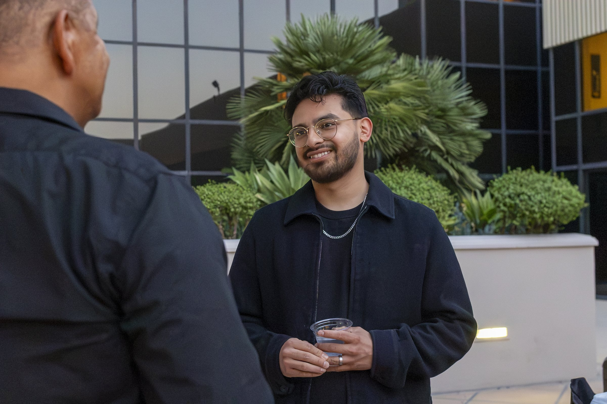
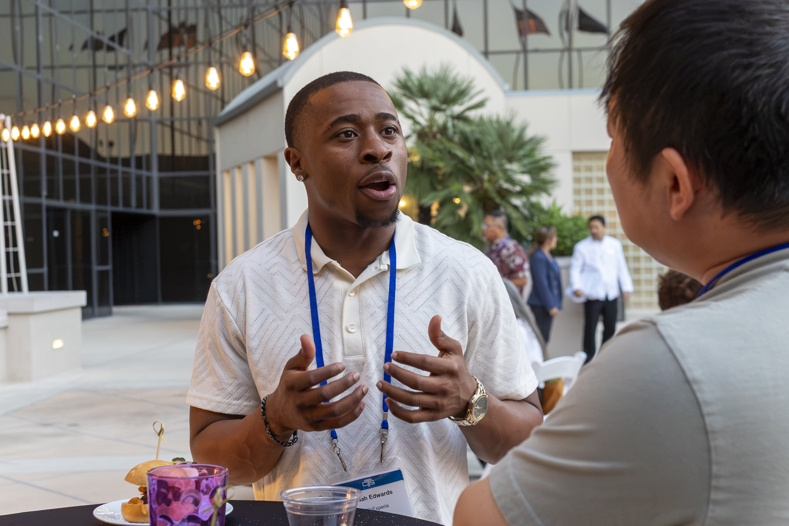
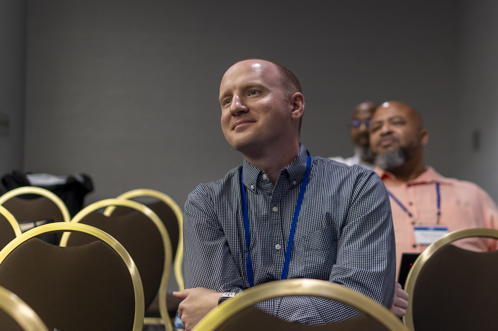

About CTS
At its core, the Church & Technology Summit (CTS) exists to equip, empower, and inspire churches to embrace innovation while advancing their mission. As a pioneering platform at the intersection of faith, leadership, and technology, CTS is committed to helping churches navigate an ever-evolving digital landscape with excellence, relevance, and vision. By bringing together pastors, technologists, creatives, and innovators, CTS creates a dynamic environment where meaningful conversations spark practical solutions and lasting transformation.

Our purpose is simple yet ambitious: to bridge the gap between ministry and technology, inspire innovation, and foster collaboration across the faith-based ecosystem. At CTS, we're not just hosting a conference; we're cultivating an ecosystem where churches discover innovative solutions, leaders gain fresh perspectives, and meaningful partnerships create lasting impact. Through engaging sessions, practical resources, and strategic connections, we empower ministries to embrace technology, strengthen their mission, and confidently shape the future of the Church.
Register Now
Our Community